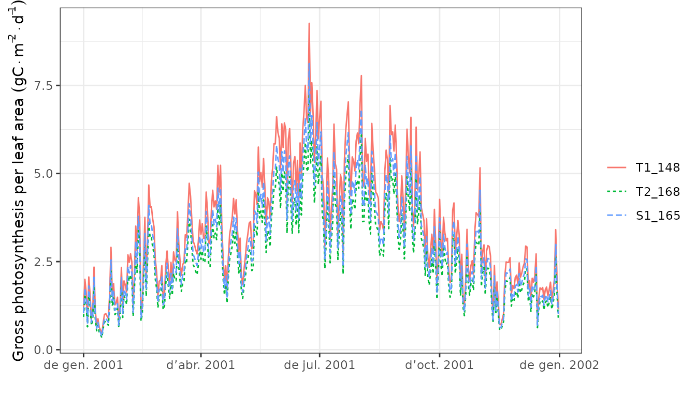
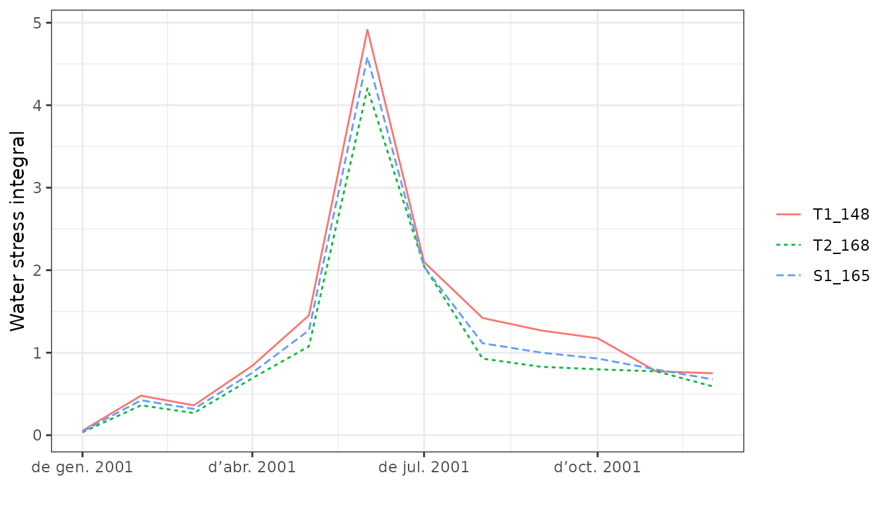

Basic water balance
Miquel De Caceres
2022-01-14
Source:vignettes/BasicWaterBalance.Rmd
BasicWaterBalance.RmdAbout this vignette
The present document describes how to run the soil plant water balance model described in De Cáceres et al. (2015) using package medfate. The document illustrates how to prepare the inputs, use the simulation functions and inspect the outputs. All the details of the model design and formulation can be found at https://emf-creaf.github.io/medfatebook/index.html. Because it introduces many basic features of simulations with package medfate, this document should be read before addressing advanced topics of water balance simulations or growth simulations.
Preparing model inputs
Model inputs are explained in greater detail in vignette ‘Simulation inputs’. Here we only review the different steps required to run function spwb().
Soil, vegetation, meteorology and species data
Soil information needs to be entered as a data frame with soil layers in rows and physical attributes in columns. Soil physical attributes can be initialized to default values, for a given number of layers, using function defaultSoilParams():
spar = defaultSoilParams(4)The soil input for water balance simulation is actually a list of class soil that is created using a function with the same name:
examplesoil = soil(spar)As explained in the package overview, models included in medfate were primarily designed to be ran on forest inventory plots. Here we use the example object provided with the package:
data(exampleforestMED)
exampleforestMED## $ID
## [1] "1"
##
## $patchsize
## [1] 10000
##
## $treeData
## Species N DBH Height Z50 Z95
## 1 148 168 37.55 800 400 2000
## 2 168 384 14.60 660 400 2000
##
## $shrubData
## Species Cover Height Z50 Z95
## 1 165 3.75 80 300 1500
##
## $herbCover
## [1] 10
##
## $herbHeight
## [1] 20
##
## attr(,"class")
## [1] "forest" "list"In the basic water balance, only mean temperature, precipitation and potential evapotranspiration is required, but radiation may also be necessary to simulate snow melt.
## MeanTemperature MinTemperature MaxTemperature Precipitation
## 2001-01-01 3.57668969 -0.5934215 6.287950 4.869109
## 2001-01-02 1.83695972 -2.3662458 4.569737 2.498292
## 2001-01-03 0.09462563 -3.8541036 2.661951 0.000000
## 2001-01-04 1.13866156 -1.8744860 3.097705 5.796973
## 2001-01-05 4.70578690 0.3288287 7.551532 1.884401
## 2001-01-06 4.57036721 0.5461322 7.186784 13.359801
## MeanRelativeHumidity MinRelativeHumidity MaxRelativeHumidity
## 2001-01-01 78.73709 65.15411 100.00000
## 2001-01-02 69.70800 57.43761 94.71780
## 2001-01-03 70.69610 58.77432 94.66823
## 2001-01-04 76.89156 66.84256 95.80950
## 2001-01-05 76.67424 62.97656 100.00000
## 2001-01-06 89.01940 74.25754 100.00000
## Radiation WindSpeed WindDirection PET
## 2001-01-01 12.89251 2.000000 172 1.3212770
## 2001-01-02 13.03079 7.662544 278 2.2185985
## 2001-01-03 16.90722 2.000000 141 1.8045176
## 2001-01-04 11.07275 2.000000 172 0.9200627
## 2001-01-05 13.45205 7.581347 321 2.2914449
## 2001-01-06 12.84841 6.570501 141 1.7255058Finally, simulations in medfate require a data frame with species parameter values, which we load using defaults for Catalonia (NE Spain):
data("SpParamsMED")Simulation control
Apart from data inputs, the behaviour of simulation models can be controlled using a set of global parameters. The default parameterization is obtained using function defaultControl():
control = defaultControl("Granier")Some parameters deserve explanation here:
- Console output can be turned off by setting
verbose = FALSE. - The soil water retention curves can be switched between Saxton’s and Van Genuchten’s using parameter
soilFunctions. - The complexity of the soil water balance calculations will be very different if we set
transpirationMode = "Sperry". Most of the other options apply in the case of advanced soil water balance only.
Water balance input object
A last object is needed before calling simulation functions, called spwbInput. It consists in the compilation of aboveground and belowground parameters and the specification of additional parameter values for each plant cohort. This is done by calling function spwbInput(), but if one has a forest object, the object can be generated more directly using function forest2spwbInput():
x = forest2spwbInput(exampleforestMED, examplesoil, SpParamsMED, control)Different parameter variables will be drawn depending on the value of transpirationMode. For the simple water balance model (transpirationMode = "Granier"), relatively few parameters are needed. All the input information for forest data and species parameter values can be inspected by accessing the different elements of this object, whose names are.
names(x)## [1] "control" "soil" "canopy"
## [4] "cohorts" "above" "below"
## [7] "belowLayers" "paramsPhenology" "paramsInterception"
## [10] "paramsTranspiration" "internalPhenology" "internalWater"Note that (since ver 2.0) the water balance input object contains an element soil with the soil input.
It is important to remember that, unlike normal objects in R, any water balance simulation will modify the spwbInput object. For example, the state of the soil at the end of the simulated process (i.e. W) will be stored. Hence, one can use the same object to simulate water balance sequentially and the final state of one simulation is the initial state of the next. In the case of soil water balance, these modifications are small, for example concerning LAI_expanded, but in the case of growth simulations the object is used to store the status of vegetation during and at the end of simulations.
Finally, note that users can set cohort-specific parameters for soil water balance (instead of using species-level values) by modifying manually the parameter values in this object. Since some parameters may be coordinated by design, however, it is better to use specific package functions for this purpose.
Executing the soil water balance model
Water balance for a single day
Soil water balance simulations will normally span periods of several months or years, but since the model operates at a daily temporal scale, it is possible to perform soil water balance for one day only. This is done using function spwb_day(). In the following code we select day 100 from the meteorological input data and perform soil water balance for that day only:
d = 100
sd1<-spwb_day(x, rownames(examplemeteo)[d],
examplemeteo$MinTemperature[d], examplemeteo$MaxTemperature[d],
examplemeteo$MinRelativeHumidity[d], examplemeteo$MaxRelativeHumidity[d],
examplemeteo$Radiation[d], examplemeteo$WindSpeed[d],
latitude = 41.82592, elevation = 100,
slope= 0, aspect = 0, prec = examplemeteo$Precipitation[d])Function spwb_day() is most useful when working with the complex transpiration model. This is why so many meteorological variables are required. The output of spwb_day() is a list with five elements:
names(sd1)## [1] "cohorts" "WaterBalance" "Soil" "Stand" "Plants"- cohorts: Table with the species code and species name of each cohort.
- WaterBalance: Contains the soil water balance flows (precipitation, infiltration, transpiration, …)
- Soil: Contains output values by soil layer (i.e. water evaporated from each soil layer, water transpired from each soil layer and the final soil water potential).
- Stand: A list with stand LAI (expanded and dead leaves), canopy water retention capacity and the proportion of light (SWR or PAR) reaching the ground.
- Plants: Contains output values by plant cohort (i.e. LAI values, transpiration, water potential, drought stress index, …).
sd1## $cohorts
## SP Name
## T1_148 148 Pinus halepensis
## T2_168 168 Quercus ilex
## S1_165 165 Quercus coccifera
##
## $WaterBalance
## PET Rain Snow NetRain Snowmelt
## 5.023347 0.000000 0.000000 0.000000 0.000000
## Runon Infiltration Runoff DeepDrainage SoilEvaporation
## 0.000000 0.000000 0.000000 0.000000 0.500000
## PlantExtraction Transpiration
## 1.191177 1.191177
##
## $Soil
## SoilEvaporation PlantExtraction psi
## 1 4.999998e-01 0.4166117 -0.03534200
## 2 1.529512e-07 0.5942356 -0.03386479
## 3 9.643749e-23 0.1356197 -0.03330090
## 4 1.860038e-44 0.0447099 -0.03324776
##
## $Stand
## LAI LAIlive LAIexpanded LAIdead Cm LgroundPAR
## 1.9377426 1.9377426 1.9377426 0.0000000 1.4525431 0.3615369
## LgroundSWR
## 0.4706582
##
## $Plants
## LAI AbsorbedSWRFraction Transpiration GrossPhotosynthesis
## T1_148 0.96734365 0.269389835 0.60620729 2.19041343
## T2_168 0.93111690 0.252359051 0.56788325 0.83803402
## S1_165 0.03928201 0.007592907 0.01708632 0.04157272
## PlantPsi DDS StemPLC
## T1_148 -0.03348382 1.480506e-06 4.679661e-07
## T2_168 -0.03348382 9.621501e-07 9.621501e-07
## S1_165 -0.03364403 6.400374e-07 7.860002e-08
##
## attr(,"class")
## [1] "spwb_day" "list"Water balance for multiple days
Most often, users will use function spwb() to run the soil water balance model. This function requires the spwbInput object and the meteorological data frame. However, function spwb_day() modified the state variables of the input objects. In particular, the values of soil moisture are now:
x$soil$W## [1] 0.9865724 0.9949126 0.9982120 0.9985263We simply reset state variables to their default values so that new simulations are not affected by the end state of the previous simulation:
resetInputs(x)
x$soil$W## [1] 1 1 1 1Now we are ready to call function spwb():
S = spwb(x, examplemeteo, latitude = 41.82592, elevation = 100)## Initial soil water content (mm): 291.257
## Initial snowpack content (mm): 0
## Performing daily simulations
##
## [Year 2001]:....................................
##
## Final soil water content (mm): 269.1
## Final snowpack content (mm): 0
## Change in soil water content (mm): -22.1567
## Soil water balance result (mm): -22.1567
## Change in snowpack water content (mm): 0
## Snowpack water balance result (mm): 7.10543e-15
## Water balance components:
## Precipitation (mm) 513
## Rain (mm) 462 Snow (mm) 51
## Interception (mm) 98 Net rainfall (mm) 364
## Infiltration (mm) 406 Runoff (mm) 9 Deep drainage (mm) 68
## Soil evaporation (mm) 25 Transpiration (mm) 334Function spwb() returns an object of class with the same name, actually a list:
class(S)## [1] "spwb" "list"If we inspect its elements, we realize that the output is arranged differently than in spwb_day():
names(S)## [1] "latitude" "topography" "spwbInput" "WaterBalance" "Soil"
## [6] "Stand" "Plants" "subdaily"In particular, element spwbInput contains a copy of the input parameters that were used to run the model:
names(S$spwbInput)## [1] "control" "soil" "canopy"
## [4] "cohorts" "above" "below"
## [7] "belowLayers" "paramsPhenology" "paramsInterception"
## [10] "paramsTranspiration" "internalPhenology" "internalWater"As before, WaterBalance contains water balance components, but in this case in form of a data frame with days in rows:
head(S$WaterBalance)## PET Precipitation Rain Snow NetRain Snowmelt
## 2001-01-01 1.3212770 4.869109 4.869109 0 3.3294560 0
## 2001-01-02 2.2185985 2.498292 2.498292 0 0.9931555 0
## 2001-01-03 1.8045176 0.000000 0.000000 0 0.0000000 0
## 2001-01-04 0.9200627 5.796973 5.796973 0 4.2685601 0
## 2001-01-05 2.2914449 1.884401 1.884401 0 0.6812806 0
## 2001-01-06 1.7255058 13.359801 13.359801 0 11.5338016 0
## Infiltration Runoff DeepDrainage Evapotranspiration Interception
## 2001-01-01 3.3294560 0 2.6410612 2.3529648 1.539653
## 2001-01-02 0.9931555 0 0.6887223 2.5312282 1.505136
## 2001-01-03 0.0000000 0 0.1251471 0.5913059 0.000000
## 2001-01-04 4.2685601 0 2.1461383 2.1796207 1.528413
## 2001-01-05 0.6812806 0 0.4794930 2.2317043 1.203121
## 2001-01-06 11.5338016 0 8.4204049 2.7351650 1.825999
## SoilEvaporation PlantExtraction Transpiration
## 2001-01-01 0.5000000 0.3133120 0.3133120
## 2001-01-02 0.5000000 0.5260921 0.5260921
## 2001-01-03 0.1634040 0.4279019 0.4279019
## 2001-01-04 0.4330351 0.2181728 0.2181728
## 2001-01-05 0.4852175 0.5433660 0.5433660
## 2001-01-06 0.5000000 0.4091660 0.4091660Element Plants is in turn a list with several dataframes with plant output variables, for example plant water potentials are in:
head(S$Plants$PlantPsi)## T1_148 T2_168 S1_165
## 2001-01-01 -0.03337203 -0.03337203 -0.03357728
## 2001-01-02 -0.03345071 -0.03345071 -0.03362425
## 2001-01-03 -0.03402551 -0.03402551 -0.03427024
## 2001-01-04 -0.03332233 -0.03332233 -0.03349845
## 2001-01-05 -0.03346067 -0.03346067 -0.03363036
## 2001-01-06 -0.03322976 -0.03322976 -0.03349260Inspecting model outputs
Plots
Package medfate provides a simple plot function for objects of class spwb. It can be used to show meteorological inputs, snow dynamics, and different components of the water balance:
plot(S, type = "PET_Precipitation")
plot(S, type = "Snow")
plot(S, type = "Export")
plot(S, type = "Evapotranspiration")
Function plot is also allows displaying soil moisture dynamics by layer, which can be done in four different ways (the first two only imply a change in axis units):
plot(S, type="SoilTheta")
plot(S, type="SoilRWC")
plot(S, type="SoilPsi")
plot(S, type="SoilVol")
Finally, the same function can also be used to draw the dynamics of plant variables by cohorts, such as transpiration, gross photosynthesis, water potential or drought stress:
plot(S, type="Transpiration")
plot(S, type="GrossPhotosynthesis")
plot(S, type="PlantPsi")
plot(S, type="PlantStress")
Finally, one can interactively create plots using function shinyplot, e.g.:
shinyplot(S)General summaries
While the simulation model uses daily steps, users will normally be interested in outputs at larger time scales. The package provides a summary for objects of class spwb. This function can be used to summarize the model’s output at different temporal steps (i.e. weekly, annual, …). For example, to obtain the average soil moisture and water potentials by months one can use:
summary(S, freq="months",FUN=mean, output="Soil")## W.1 W.2 W.3 W.4 ML.1 ML.2 ML.3
## 2001-01-01 0.9893852 0.9960391 0.9984015 1.0106174 67.53869 116.34342 75.72686
## 2001-02-01 0.9549574 0.9627468 0.9783902 0.9825424 65.18854 112.45467 74.20904
## 2001-03-01 0.9629964 0.9745056 0.9879157 0.9982016 65.73730 113.82817 74.93153
## 2001-04-01 0.9124135 0.9022023 0.9356206 0.9430586 62.28435 105.38271 70.96505
## 2001-05-01 0.9097865 0.9102384 0.8977454 0.9029536 62.10502 106.32138 68.09229
## 2001-06-01 0.7434912 0.7525787 0.7877529 0.7949480 50.75315 87.90576 59.74956
## 2001-07-01 0.8910690 0.8208190 0.7039501 0.7010459 60.82730 95.87665 53.39328
## 2001-08-01 0.8917670 0.8619396 0.7114681 0.7002635 60.87495 100.67978 53.96350
## 2001-09-01 0.8960664 0.8718659 0.7182461 0.7001999 61.16844 101.83924 54.47760
## 2001-10-01 0.9145380 0.8832973 0.7228964 0.7001032 62.42937 103.17449 54.83032
## 2001-11-01 0.9458509 0.9438720 0.8395463 0.7931137 64.56689 110.24999 63.67799
## 2001-12-01 0.9225965 0.9440851 0.9728526 0.9780296 62.97948 110.27487 73.78902
## ML.4 MLTot WTD SWE PlantExt.1 PlantExt.2
## 2001-01-01 30.66136 290.2703 3964.501 1.68350931 0.1169455 0.1669906
## 2001-02-01 29.80959 281.6618 4000.000 0.28233380 0.2330229 0.3359347
## 2001-03-01 30.28468 284.7817 3979.384 0.01762496 0.2329065 0.3580034
## 2001-04-01 28.61168 267.2438 4000.000 0.58931434 0.3710844 0.3493573
## 2001-05-01 27.39493 263.9136 4000.000 0.00000000 0.3953324 0.5421658
## 2001-06-01 24.11812 222.5266 4000.000 0.00000000 0.4105552 0.6215636
## 2001-07-01 21.26920 231.3664 4000.000 0.00000000 0.9724018 0.3241639
## 2001-08-01 21.24546 236.7637 4000.000 0.00000000 0.7948423 0.5527136
## 2001-09-01 21.24353 238.7288 4000.000 0.00000000 0.5991287 0.4585683
## 2001-10-01 21.24060 241.6748 4000.000 0.00000000 0.4617563 0.2969489
## 2001-11-01 24.06247 262.5573 3998.066 2.67673914 0.2260691 0.2868809
## 2001-12-01 29.67268 276.7160 4000.000 0.00000000 0.1307228 0.2504165
## PlantExt.3 PlantExt.4 psi.1 psi.2 psi.3
## 2001-01-01 0.039362554 0.0168826178 -0.03500708 -0.03376087 -0.03330534
## 2001-02-01 0.103692761 0.0369560688 -0.04254934 -0.04077953 -0.03720208
## 2001-03-01 0.104349687 0.0420727410 -0.04009837 -0.03778393 -0.03509226
## 2001-04-01 0.159639239 0.0608346182 -0.05361978 -0.05660581 -0.04706053
## 2001-05-01 0.125956486 0.0471412167 -0.05742068 -0.05565997 -0.05778844
## 2001-06-01 0.393083918 0.1579509468 -0.15956552 -0.15208167 -0.12096274
## 2001-07-01 0.028493964 0.0112771726 -0.07035622 -0.10703149 -0.19576088
## 2001-08-01 0.002117174 0.0005034476 -0.06194084 -0.07177852 -0.18524141
## 2001-09-01 0.001666850 0.0002985321 -0.05941719 -0.06763098 -0.17660631
## 2001-10-01 0.001203742 0.0001911195 -0.05389610 -0.06418262 -0.17093764
## 2001-11-01 0.027692874 0.0083961854 -0.04472842 -0.04527156 -0.10563301
## 2001-12-01 0.097179489 0.0352043331 -0.05054900 -0.04494093 -0.03827503
## psi.4
## 2001-01-01 -0.03143985
## 2001-02-01 -0.03637536
## 2001-03-01 -0.03352034
## 2001-04-01 -0.04519180
## 2001-05-01 -0.05607759
## 2001-06-01 -0.11557578
## 2001-07-01 -0.20044838
## 2001-08-01 -0.20107217
## 2001-09-01 -0.20115917
## 2001-10-01 -0.20129514
## 2001-11-01 -0.14216485
## 2001-12-01 -0.03722043Parameter output is used to indicate the element of the spwb object for which we desire summaries. Similarly, it is possible to calculate the average stress of plant cohorts by months:
summary(S, freq="months",FUN=mean, output="PlantStress")## T1_148 T2_168 S1_165
## 2001-01-01 1.535434e-06 9.978466e-07 6.655076e-07
## 2001-02-01 2.689348e-06 1.747752e-06 1.180828e-06
## 2001-03-01 2.196375e-06 1.427379e-06 9.692219e-07
## 2001-04-01 6.205654e-06 4.032931e-06 2.659535e-06
## 2001-05-01 7.896621e-06 5.131861e-06 3.437357e-06
## 2001-06-01 1.501949e-04 9.761284e-05 6.639670e-05
## 2001-07-01 1.119394e-04 7.275135e-05 3.976434e-05
## 2001-08-01 4.992925e-05 3.244922e-05 1.520799e-05
## 2001-09-01 4.442200e-05 2.886996e-05 1.343758e-05
## 2001-10-01 4.130219e-05 2.684236e-05 1.231850e-05
## 2001-11-01 2.157748e-05 1.402325e-05 6.375957e-06
## 2001-12-01 3.931964e-06 2.555304e-06 1.791189e-06The summary function can be also used to aggregate the output by species. In this case, the values of plant cohorts belonging to the same species will be averaged using LAI values as weights. For example, we may average the daily drought stress across cohorts of the same species (here there is only one cohort by species, so this does not modify the output):
## Pinus halepensis Quercus coccifera Quercus ilex
## 2001-01-01 1.465726e-06 6.362355e-07 9.525454e-07
## 2001-01-02 1.476118e-06 6.389088e-07 9.592989e-07
## 2001-01-03 1.553527e-06 6.764450e-07 1.009605e-06
## 2001-01-04 1.459188e-06 6.317648e-07 9.482962e-07
## 2001-01-05 1.477437e-06 6.392575e-07 9.601560e-07
## 2001-01-06 1.447060e-06 6.314337e-07 9.404148e-07Or we can combine the aggregation by species with a temporal aggregation (here monthly averages):
summary(S, freq="month", FUN = mean, output="PlantStress", bySpecies = TRUE)## Pinus halepensis Quercus coccifera Quercus ilex
## 2001-01-01 1.535434e-06 6.655076e-07 9.978466e-07
## 2001-02-01 2.689348e-06 1.180828e-06 1.747752e-06
## 2001-03-01 2.196375e-06 9.692219e-07 1.427379e-06
## 2001-04-01 6.205654e-06 2.659535e-06 4.032931e-06
## 2001-05-01 7.896621e-06 3.437357e-06 5.131861e-06
## 2001-06-01 1.501949e-04 6.639670e-05 9.761284e-05
## 2001-07-01 1.119394e-04 3.976434e-05 7.275135e-05
## 2001-08-01 4.992925e-05 1.520799e-05 3.244922e-05
## 2001-09-01 4.442200e-05 1.343758e-05 2.886996e-05
## 2001-10-01 4.130219e-05 1.231850e-05 2.684236e-05
## 2001-11-01 2.157748e-05 6.375957e-06 1.402325e-05
## 2001-12-01 3.931964e-06 1.791189e-06 2.555304e-06Specific output functions
The package provides some functions to extract or transform specific outputs from soil plant water balance simulations. In particular, function droughtStress() allows calculating several plant stress indices, such as the number of days with drought stress > 0.5 or the maximum drought stress:
droughtStress(S, index = "NDD", freq = "years", draw=FALSE)## T1_148 T2_168 S1_165
## 2001-01-01 0 0 0
droughtStress(S, index = "MDS", freq = "years", draw=FALSE)## T1_148 T2_168 S1_165
## 2001-01-01 0.0005279732 0.0003431515 0.0002306369As the general summary function, droughtStress() allows calculating stress indices at several temporal scales. For example the water stress index (integral of water potential values) can be calculated and drawn for every month:
droughtStress(S, index = "WSI", freq = "months", draw=TRUE)
Another specific summary function is waterUseEfficiency(). This is most useful with advanced water and energy balance modeling, but for simple water balance it calculates the ratio between photosynthesis and transpiration at the desired scale. In this case it is equal to the value of the input species parameter WUE:
waterUseEfficiency(S, type = "Stand Ag/E", freq = "months", draw=FALSE)## Stand Ag/E
## 2001-01-01 2.577300
## 2001-02-01 2.577300
## 2001-03-01 2.577300
## 2001-04-01 2.577299
## 2001-05-01 2.577299
## 2001-06-01 2.577271
## 2001-07-01 2.577278
## 2001-08-01 2.577291
## 2001-09-01 2.577292
## 2001-10-01 2.577293
## 2001-11-01 2.577296
## 2001-12-01 2.577300